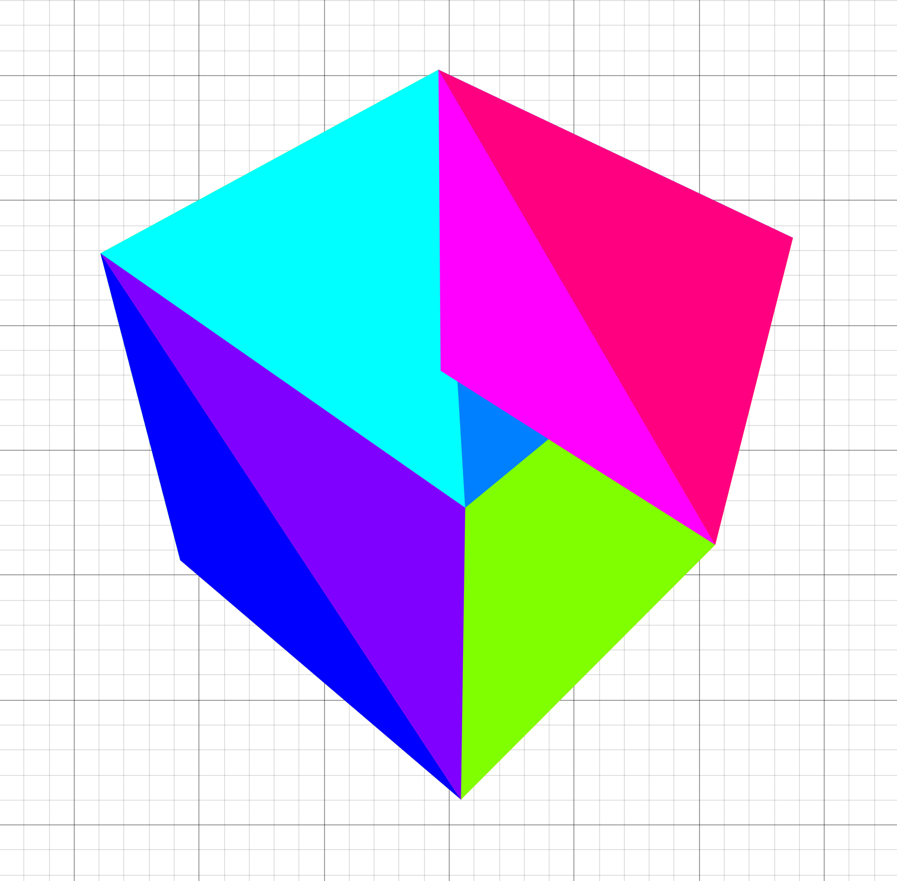

This project started seven months ago, when my precalc teacher told us about his brilliant assignment: make an artistic graph in the Desmos Graphing calculator. I knew I wanted to make something in 3D, but I didn't get it working in time, so I ended up making this monstrosity.
About a month ago, he had us make another graph, and I knew I wanted to one-up myself. I thought back to that 3D renderer I tried to implement but failed to get working, and tried to fix it up!
Here you can see my first attempt at a perspective projection in Desmos.
To get to this point, I had to jump over so many hurdles. For one, Desmos doesn't support lists of lists, which makes doing any operation that requires multiple positions clumsy. The best way I've come up with to mitigate this is to store one list for each component of the calculation.
The lack of lists of lists also makes representing matrices annoying. I settled on flattening out the list and using the formula
Well, as it turns out, through all my years of graphics programming up to that point, I had never actually learned how the perspective matrix worked! The whole thing was a really humbling experience for me and it got me to read up more on the math, hidden behind wrappers, that I've been using so often.
The missing step was the divide by w, which is integral to getting the perspective distortion that brings objects closer to the center of the screen the farther they are away. The w value is set to the actual z value, whereas the z value is mapped from the interval [near, far] to [0, 1], which is why my previous attempt that divided by z didn't look correct.
The next hurdle was getting 3D models from Blender into the graphing calculator. For this, I used a separate program in C that used Assimp to parse files and spit out various lists ready to copy and paste into Desmos.
Alright, I've got the data now. Time to render it! Because I used the vertex/index buffer format that OpenGL uses, it was simple to get all the polygons rendered like so.
Great! We've got a working renderer now.
Oh.
Well, it's time to implement depth sorting! I'll describe my (slow) first attempt in detail here, and later on I'll go over optimizations. The main idea is this: if we draw the triangles in order from front to back, then the triangles in the back will be occluded by the triangles in front, like they're supposed to!
In order to implement this, I used the centroid of the triangle as its position and projected each of them to use its z position in NDC as its depth.
Here's where my first implementation gets a bit dumb. I had to sort the indices for each triangle, but keep the indices together.
So I did the most straightforward thing!
That actually works, but it's slow because it allocates so many lists and sorts 3x the data it needs to. Oh well, let's implement lighting now and optimize later!
To really cap it all off, I added the phong shading model to the renderer, which is a really fast approximation for proper lighting that really sells the 3D effect.
This graph is featured in the 2024 Desmos Art Expo! Check it out at https://desmos.com/art.
That's the end of this post. Thanks for reading!
Back to top ⤴